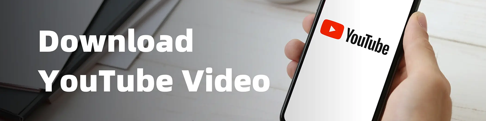

2025年如何下載YouTube視頻：完整指南
如今，YouTube 已成為全球最受歡迎的視頻平台。但有時，我們會發現自己無法訪問互聯網，或者只是想將喜愛的視頻離線保存，以便隨時輕鬆觀看。
幸運的是，現在很多在線服務和軟件工具可以輕鬆從 YouTube 下載視頻，其中很多都是完全免費的。這些工具不僅用戶友好，而且支持各種格式和分辨率，以滿足不同的需求。
如果你也在尋找下載 YouTube 視頻的最佳方式，請跟隨我們探索一些簡單有效的方法，讓你的觀看體驗更加便捷!
如何使用 YouTube Premium 下載視頻
作為 YouTube 的普通用戶，我仍然認為 YouTube Premium 是下載視頻最簡單、最安全的方式之一，至少如果你不介意價格的話。
訂閱後，你只需在手機或平板電腦上點擊"下載"按鈕即可保存你喜愛的視頻。無論你是在出國旅行、通勤途中，還是暫時離線，都可以隨時觀看，享受無廣告干擾的流暢體驗。
話雖如此，但也有一些限制。下載的視頻只能在 YouTube 應用內播放，無法保存或導出到其他地方，而且你需要定期重新連接到互聯網才能保持視頻處於活動狀態。
在我看來，如果你經常使用 YouTube 或經常需要離線訪問，YouTube Premium 是一個省心的選擇。無需安裝額外的工具，也不用擔心版權或安全問題。
更實惠的訂閱選項
如果你發現 YouTube Premium 的官方定價有點高，實際上還有一種更經濟實惠的選擇——你可以通過可靠的帳戶共享平台訂閱，並以更低的成本享受同樣的好處。
我個人通過 環球巴士 訂閱了YouTube Premium，只花了原價的一小部分，同時仍然可以獲得所有高級功能，如離線下載、後台播放和無廣告體驗。
環球巴士 是一個知名的數字訂閱共享平台。它易於使用，支持多種支付方式，而且賬戶非常穩定——非常適合像我這樣想要省錢又不犧牲體驗的用戶。如果你也在尋找更實惠的訂閱方式，環球巴士 絕對值得一試。
如何下載YouTube視頻到你的電腦
即使分享平台提供折扣訂閱，有些人可能仍然覺得價格有點高。好在也有免費的方式下載 YouTube 視頻。這些方式通常需要第三方工具，提供靈活的下載選項，支持多種格式和分辨率，可以滿足各種用戶需求。
4K 視頻下載器(Windows/macOS/Linux)

4K 視頻下載器是一款專為下載高質量視頻而設計的桌面工具，由 4K Download 團隊開發。它適用於 Windows、macOS 和 Ubuntu，界面簡潔，控制直觀，即使是初學者也能輕鬆上手。
無論你是想下載單個視頻、整個播放列表，還是僅提取音頻和字幕，它都能流暢可靠地完成任務。對於經常從 YouTube 或其他平台保存內容的用戶來說，它是一個可靠的選擇。
它提供哪些功能？
我發現 4K 視頻下載器最令人印象深刻的是它對視頻質量的卓越支持——你可以輕鬆下載 1080p、4K 甚至 8K 的視頻，所有這些都在免費版本中提供。
它還支持批量下載整個播放列表或頻道。只需粘貼鏈接，軟件就會自動檢測所有視頻，並讓你一鍵下載，無需逐個復制粘貼鏈接。
我也經常用它來提取MP3音頻——它特別適合用來保存背景音樂或播客。它也支持字幕下載，包括原版字幕和翻譯字幕，這對語言學習者來說很有幫助。
另一個有用的功能是"智能模式"，它可以讓你預設你喜歡的格式、質量和保存位置，從而使整個過程更加高效。
4K 視頻下載器提供 免費版 和一次性購買的 專業版，專業版售價約為 15 美元 。免費版涵蓋了大多數核心功能，但 3D 視頻下載和每日無限下載等高級選項只有升級到專業版後才能使用。
如何安裝和使用它
你可以直接從其官方網站下載並安裝 4K 視頻下載器——它支持 Windows、macOS 和 Ubuntu (Linux)，無需 Google Play 商店。只需訪問該網站，選擇適合你系統的版本，然後按照安裝步驟操作即可。
安裝完成後，只需復制所需視頻的鏈接，打開軟件，然後點擊"粘貼鏈接"。軟件會自動分析視頻，並顯示可用的格式和分辨率(例如 MP4、1080p、4K 甚至 8K)。選擇你的偏好設置，然後點擊"下載"。
如果你想下載整個播放列表或頻道，只需復制相應的鏈接即可。軟件會檢測所有視頻，並將它們批量下載到你預設的文件夾中，讓下載過程快速便捷。
ClipGrab(Windows / macOS / Linux)
ClipGrab 是一款開源視頻下載器，適用於 Windows、macOS 和 Linux。它界面簡潔，設計輕巧，安裝快捷，無需復雜的設置。作為一款維護良好的免費工具，它深受用戶歡迎，是日常休閑使用的理想之選。
它與 4K 視頻下載器有何不同？
最大的區別在於 ClipGrab 完全 免費 ——無需升級到專業版即可解鎖全部功能。這對於預算有限或偶爾下載視頻的用戶來說尤其有吸引力。
ClipGrab 還提供了更簡潔、更流暢的界面，沒有廣告或附加銷售，非常適合新手使用。雖然它通常支持高達 1080p 的下載(不像 4K 視頻下載器那樣支持 4K 或 8K)，但它內置了視頻轉換功能。你可以輕鬆地將下載內容轉換為 MP3、WMV 或 OGG 等格式，這對於提取音頻或確保兼容性非常方便。
如何安裝和使用 ClipGrab
ClipGrab 的安裝和使用方式與 4K Video Downloader 幾乎完全相同。只需從官方網站下載相應的版本，然後按照簡單快捷的設置流程操作即可。
安裝完成後，你只需復制所需的視頻鏈接並粘貼到軟件中即可開始下載。ClipGrab 還允許你選擇格式和分辨率，無需註冊或登錄，使用極其方便。
如何在安卓設備上下載 YouTube 視頻
除了將視頻保存在電腦上之外，許多用戶還希望能夠將 YouTube 視頻直接下載到手機或平板電腦上，以便隨時隨地離線觀看。
在接下來的章節中，我將指導你如何在 Android 和 iOS 設備上下載 YouTube 視頻。如果你正在尋找，請繼續閱讀!

TubeMate
TubeMate 是一款專為安卓設備設計的 YouTube 視頻下載應用。它允許用戶直接在手機上瀏覽和保存在線視頻，無需電腦或網頁端工具。其界面與 YouTube 的移動版非常相似，並且完全 免費使用 ，對於喜歡在手機上離線觀看視頻的用戶來說，它是一個絕佳的選擇。
核心功能概述
它支持從 YouTube 下載高清視頻(最高可達 4K)，並允許你選擇 MP3 等音頻格式。與 4K Video Downloader 類似，它不僅支持單個視頻下載，還支持批量下載，使用戶可以一次性下載整個播放列表或頻道，從而大大提高下載效率。
需要注意的是：TubeMate 在 Google Play 商店中不可用。你需要從其官方網站或可信的第三方來源手動下載 APK 安裝文件。這是由於 Google 對視頻下載應用的政策限制，而非因為 TubeMate 本身存在任何違法行為。
安裝方法
由於 TubeMate 在 Google Play 商店中不可用，你需要手動下載並安裝 APK 文件。只需在手機瀏覽器中打開官方網站，點擊"下載"，然後選擇一個可用的鏡像即可獲取 APK 文件。
如果你是第一次在 Google Play 之外安裝應用，你的設備可能會顯示"安裝來自未知來源的應用"的警告。只需轉到"設置"，啟用"允許來自此來源的應用"選項，然後返回繼續安裝。
如何使用
安裝後，你可以直接在應用內搜索並播放視頻。找到想要下載的視頻後，只需點擊播放屏幕上的下載按鈕，選擇你喜歡的分辨率和格式，即可開始下載。
下載的視頻會自動保存到你的"視頻"或"下載"文件夾中，你可以使用手機的文件管理器或任何第三方視頻播放器訪問它們。當然，你也可以直接使用 TubeMate 的內置媒體播放器觀看，無需切換到其他應用。
新管道
與 TubeMate 類似，NewPipe 是另一款功能強大的 Android 版 YouTube 視頻下載器。兩者都允許用戶下載視頻、選擇分辨率並提取音頻以供離線使用。NewPipe 支持 144p 到 1080p 的下載、MP3 轉換和後台播放，而且完全 免費 且開源。
NewPipe 與 TubeMate 有何不同
NewPipe 的一個主要優勢是它不依賴任何 Google 服務，這意味著即使在沒有安裝 Google Play 或 Google 服務的設備上它也能完美運行。
雖然 TubeMate 也可以在沒有 Google 服務的情況下運行和下載視頻，但它的某些功能(例如自動更新或與 Google Play 相關的某些功能，例如廣告或 YouTube 登錄)在該環境中可能會受到限制或不可用。
安裝和使用概述
由於 NewPipe 尚未在 Google Play 商店上架，你需要從其官方網站或值得信賴的第三方來源下載 APK 文件。下載後，請確保啟用"允許從未知來源安裝"選項，然後點擊 APK 文件開始安裝。
安裝完成後，打開 NewPipe 應用，像在 YouTube 上一樣瀏覽或搜索視頻。找到想要下載的視頻後，點擊下載按鈕，選擇你喜歡的格式和分辨率，視頻就會直接保存到你設備的存儲空間。
如何在不安裝任何軟件的情況下下載 YouTube 視頻
如果你不想在手機或電腦上安裝任何其他應用程序，你也可以使用各種在線工具直接下載 YouTube 視頻。
Y2Mate.com
Y2Mate.com 是一款 免費的 網頁視頻下載器，可讓你從 YouTube 等平台下載視頻或音頻內容，無需安裝軟件。只需粘貼視頻鏈接，選擇你喜歡的格式和分辨率，即可開始下載。它易於使用，並支持各種瀏覽器和設備。
功能和限制
Y2Mate 提供多種格式選項，包括 MP4、3GP、WEBM 和 MP3，以滿足不同的需求。它兼容大多數主流瀏覽器，例如 Google Chrome、Mozilla Firefox、Safari、Microsoft Edge 和 Opera。你只需在瀏覽器中打開 Y2Mate 網站，粘貼 YouTube 視頻鏈接，即可輕鬆下載視頻或音頻。
Y2Mate 最大的優勢在於無需安裝任何軟件，非常適合快速下載單個視頻或音頻文件。其界面簡潔易用，即使沒有技術經驗的用戶也能輕鬆上手。然而，它在批量下載和高分辨率視頻方面存在局限性。如果你需要下載大量文件或需要全高清或 4K 畫質，Y2Mate 可能並非最佳選擇。
Y2Mate 使用分步指南
只需復制視頻鏈接並粘貼到 Y2Mate.com 的輸入框中即可。網站將自動分析鏈接，並顯示可用的格式和分辨率列表(最高支持 1080p)。你還可以選擇將音頻提取為 MP3 文件。
選擇好選項後，點擊"下載"即可開始。如果你正在尋找一種快速、無需安裝的視頻下載方式，Y2Mate 絕對值得一試。
SaveFrom.net
SaveFrom.net 與 Y2Mate.com 類似，是一款 免費的 在線 YouTube 視頻下載器，無需安裝，可直接在瀏覽器中使用。其功能非常相似——只需粘貼視頻鏈接、選擇格式並下載即可。
然而，值得注意的是，SaveFrom.net 已於 2020 年 4 月 6 日起停止在美國提供服務。即便如此，它仍然是其他地區用戶的一個不錯的選擇。
它與 Y2Mate.com 有何不同
SaveFrom.net 支持更廣泛的平台——不僅支持 YouTube，還支持 Instagram、TikTok、Twitter 等，對於想要保存來自不同社交媒體網站內容的用戶來說，它是一個絕佳的選擇。另一方面，Y2Mate 更專注於 YouTube，並提供更詳細的格式選項和更流暢的視頻和音頻下載用戶界面。
如何使用
使用方法與Y2Mate.com幾乎相同。
如何在 iOS 設備上下載 YouTube 視頻
iOS 系統不支持通過應用直接從 YouTube 下載視頻，但你可以使用Documents by Readdle(一款功能強大的文件管理應用)輕鬆解決此問題。除了整理文件外，它還內置瀏覽器，方便你訪問 SaveFrom.net 或 Y2Mate(如前所述)等視頻下載網站。這使得將 YouTube 視頻保存到 iOS 設備成為一種實用且相對簡單的方法。

安裝和使用方法
首先，在 iPhone 或 iPad 上打開 App Store，搜索"Documents by Readdle"。點擊即可下載並安裝——通常只需幾分鐘。安裝完成後，你會在主屏幕上看到 Documents by Readdle 圖標。點擊即可啟動該應用。
首次打開該應用時，它會引導你完成一些基本的設置步驟，例如授予文件和存儲權限——這些權限是保存下載文件所必需的。設置完成後，你就可以使用應用的內置瀏覽器和文件管理器開始下載視頻了。
在Documents by Readdle的內置瀏覽器中，訪問 SaveFrom.net 或 Y2Mate，粘貼要下載的 YouTube 視頻鏈接，選擇你喜歡的格式和分辨率，然後點擊"下載"。視頻將直接保存到應用的下載文件夾中，你可以隨時訪問和播放。整個過程快速簡單，無需額外配置。
結論
雖然有很多免費的方式可以下載 YouTube 視頻，但最方便、最可靠的選擇仍然是訂閱 YouTube Premium。
訂閱高級版後，你可以直接在 YouTube 應用內下載視頻以供離線觀看，完全無廣告干擾，享受流暢無憂的體驗。相比之下，TubeMate 或 Documents by Readdle 等第三方工具也能完成下載，但它們通常需要更多步驟，並且可能存在隱私或安全問題。
如果你覺得單獨訂閱 YouTube Premium 不划算，可以考慮通過共享訂閱來降低費用。通過與他人共享帳戶，你可以分攤費用，同時仍然享受 YouTube Premium 的所有福利。
環球巴士提供了一個值得信賴的平台，幫助用戶以更實惠的價格分享 YouTube Premium 訂閱。
如果你希望享受無廣告視頻、視頻下載和後台播放(無需支付全價)，請立即前往 環球巴士，選擇適合你需求的共享計劃，以更低的價格開始享受完整的 YouTube Premium 體驗!
常問問題
如何合法地從 YouTube 下載視頻？
想要合法下載 YouTube 視頻，訂閱 YouTube Premium 是最佳選擇。它允許直接在應用內進行離線下載。你還可以下載獲得知識共享許可的視頻或你擁有的視頻，同時遵守版權法和 YouTube 的服務條款。
如何從 YouTube 下載並保存視頻？
要從 YouTube 下載並保存視頻，請訂閱 YouTube Premium，以便直接在應用內下載視頻以供離線觀看。或者，你也可以使用在線工具下載獲得知識共享許可的視頻或你自己的內容，但請確保遵守 YouTube 的服務條款和版權法。
如何將 YouTube 上的視頻下載到我的電腦上？
要將 YouTube 視頻下載到電腦，請嘗試 4K 視頻下載器。它可以讓你輕鬆下載不同格式和分辨率的視頻、播放列表和頻道。只需復制視頻網址，粘貼到應用中，然後選擇所需的格式和畫質即可開始下載。